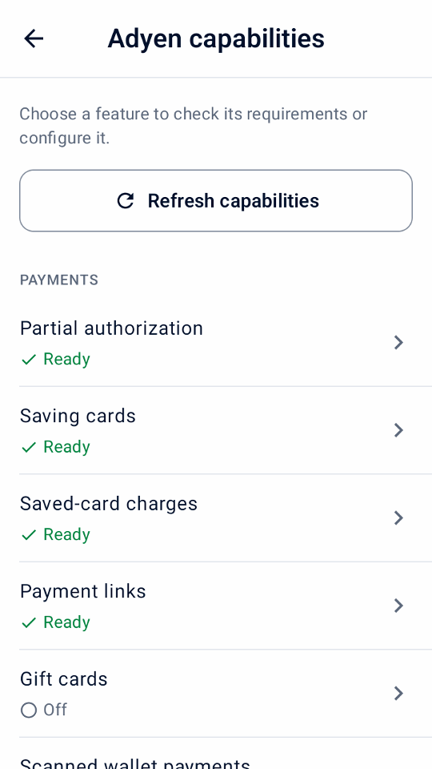
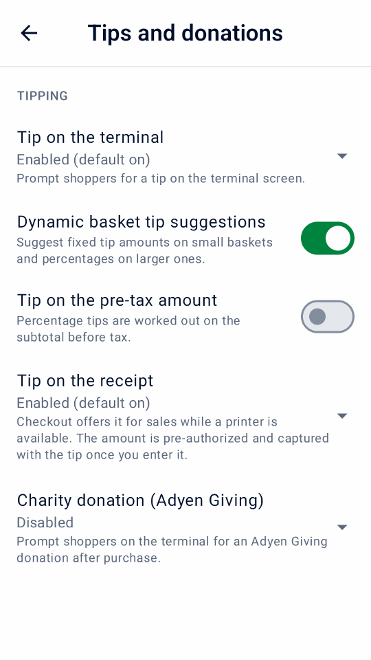
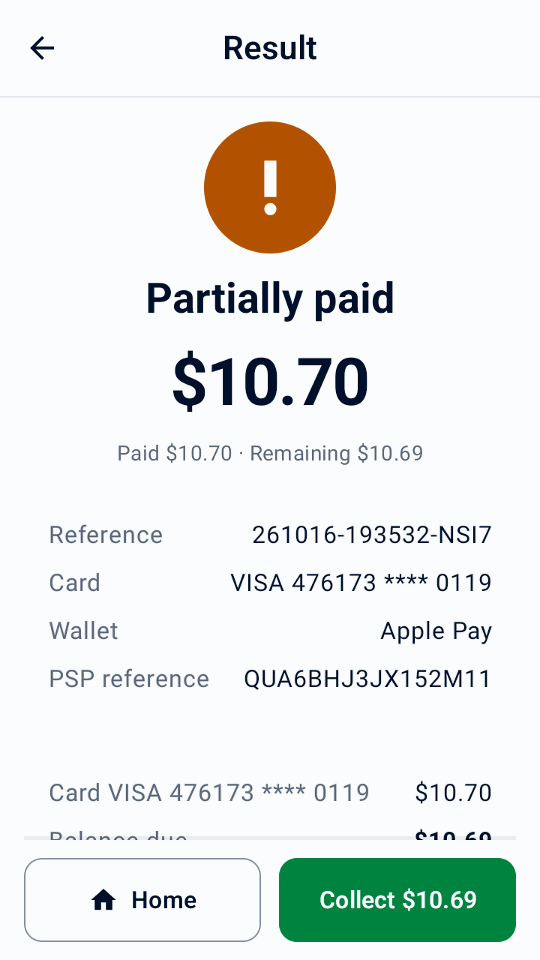
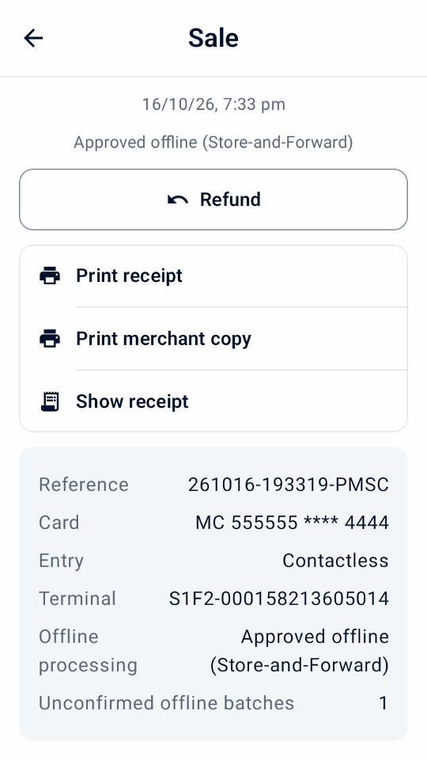
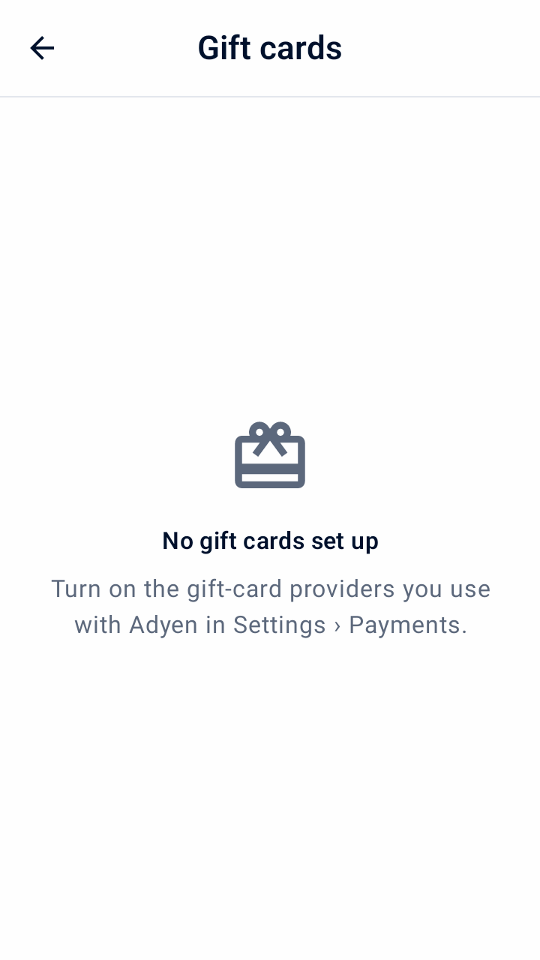

Guide
Payment options
Add the payment workflows your business needs. Check availability, finish Adyen setup and test each workflow before live use.
Check and configure Adyen capabilities
Open Settings › Adyen capabilities after connecting your payment destination. This hub covers Adyen payment and terminal features, not app-only tools or Manager PIN settings. Its four groups are Payments, Tips and shopper interaction, Receipts and scanning, and Terminal and recovery.
Each feature shows Ready, Configured at Adyen, Off, Needs setup, or Unverified below its name. Unsupported features are collapsed at the bottom. These indicators do not guarantee approval for a merchant account, card, or payment method. Until payments are set up, the screen offers Finish setting up payments instead.
Off · configured at Adyen means Adyen already has the feature set up for the terminal or store, such as tip options, MOTO or a gift-card type; turn on its local setting in Mini mPOS to use it.
- Tap Refresh capabilities to read the selected terminal's settings. Real terminal inspection needs the Management API roles in Quick start.
- Choose a feature to view its requirements and settings.
- For supported terminals, edit terminal tipping, DCC, MOTO, or offline limits inside that feature. Enter currency amounts normally and explicitly select Use inherited limit to remove a limit override. Tip suggestions have separate validated rows.
- Tap Save to Adyen.
An unknown save is not retried automatically. Refresh successfully and review Adyen's values before deciding what to do. A successful save and read-back confirm the settings at Adyen, not that the terminal has applied them. A configuration download and restart may still be needed; see Adyen terminal configuration updates.
Tap to Pay does not offer physical-terminal features such as terminal tipping, shopper display, MOTO/MKE, offline payments or terminal reconciliation. For account enablement and payment-method requirements, follow the Adyen in-person payments documentation.


Choose how to collect tips
Terminal tips are chosen before the card is charged. Receipt tips hold the bill until staff enter the written tip and capture it. Follow the requirements for your chosen method below.
Collect a tip on the terminal
- Check terminal tipping in Adyen capabilities. Set the terminal's predefined and custom tip options for the payment currency when needed.
- In Settings › Tips and donations, enable Tip on the terminal and choose its checkout default. Optionally enable Dynamic basket tip suggestions for fixed amounts on small baskets and percentages on larger ones, or Tip on the pre-tax amount. Both options require terminal software 1.101 or later, verified by a connection check.
- At sale checkout, select Tip on the terminal and tap Pay. The shopper chooses a tip before the card is charged. Check the returned total and tip and deliver the receipt.
This does not need a printer or later tip entry. Terminal tipping and tips on the receipt cannot be selected together. Neither is offered for pre-authorizations, scanned-wallet payments or payment links; terminal tipping is not offered with Tap to Pay.


Collect a tip written on the receipt
Prerequisites
- A terminal with a printer
- Pre-authorization and overcapture enabled by Adyen Support; see the Adyen receipt tipping guide
In Settings › Tips and donations, choose Enabled (default off) or Enabled (default on) to set how the checkout switch starts. Disabled, the default, hides it. Some debit cards and wallets do not support this flow.
- At a sale's checkout, switch on Tip on the receipt and tap Pay. The bill is held, not charged.
- Print the receipt. It has blank Tip and Total lines, and the merchant copy has a signature line.
- When the customer has filled it in, tap Enter tip on the result or in History's Awaiting tip filter.
- Enter the tip or the total, or tap No tip, and confirm.
The app captures the bill plus the tip. Tips over 20% first need the card issuer to increase the hold; if it refuses, enter a smaller tip or none. A saved tip cannot be changed. Before a tip is entered, cancel the payment; afterward, refunds include the tip.
Warning
Enter every tip promptly, including zero tips, so the bills are captured before their holds expire. For failed or unknown captures, see capture problems.
Hold and collect a deposit
Prerequisites
- Pre-authorization enabled by Adyen Support for your payment methods; see the Adyen pre-authorization guide
A pre-authorization holds an amount on the card without charging it. Your whole account does not need manual capture; Mini mPOS requests it for these payments only.
- On Home, tap New pre-authorization. Choose a pre-authorization product, scan its barcode or enter an amount. Each pre-authorization has one item.
- At checkout, tap Pre-authorize. The receipt shows the amount held.
- When you are ready, open the entry in History and choose an action:
- Capture
- Collects the amount owed. A lower amount releases the rest; a higher amount first asks the card issuer to increase the hold. Refunds are possible once capture is requested.
- Adjust amount
- Changes the amount held without charging it. Submitting the same amount renews the authorization.
- Cancel pre-authorization
- Releases the hold. If the payment was already captured in the Customer Area, Adyen refunds it in full instead.
Capture requested is not final confirmation; check the Customer Area. For immediate answers to adjustments, enable Return adjust authorisation data as described in the Adyen authorization adjustment guide .
Warning
Holds expire. Check the pre-authorization filter daily and capture or cancel promptly. For failed or unknown operations, see capture problems.
Use optional checkout workflows
Enable only the checkout options you need in Settings. Except for partial authorization, splitting and surcharges, these workflows need a supported physical terminal, not Tap to Pay. Check Adyen capabilities and test your actual setup first. Most options cannot be combined in one payment; checkout explains a conflict and asks you to turn one off.
Use audio-guided payments
First turn on Enable audio guidance in Settings › Payments › Accessibility, once Adyen Support has enabled it for your terminals, they run supported software and their language is not Estonian, Latvian, Icelandic or Lithuanian. It is available on AMS1, S1F2, S1F2L, S1E2L and S1U2 with software 1.117 or later, and M450, P630 and SFO1 with 1.124 or later. See Adyen’s accessible payment requirements.
At checkout, turn on Audio guidance for a shopper who needs it, and turn off tipping, Giving and keyed entry. Use a card that needs no signature. The payment requests the full amount and skips shopper-display prompts.
The terminal reads the instructions aloud; allow the shopper time. Mini mPOS waits up to ten minutes for the result. If no answer arrives, check the unknown result before another payment. The choice resets after each attempt.
Surcharges
Adyen adds surcharges you configure at Adyen; Mini mPOS does not set them. When Adyen reports one, History, receipts and the daily report show it separately from purchases and tips; the charged total already includes it. An unreported fee stays unknown. If a partial approval does not report the surcharge, check the Customer Area or refund the original card before starting again.
Disclose the surcharge before payment, especially with Tap to Pay, which has no surcharge confirmation screen. Do not combine surcharges with DCC. Mini mPOS blocks adjustments and captures above the original hold when a surcharge was reported. See Adyen’s surcharge requirements and Adyen’s surcharge configuration.
Mexican card installments
Confirm your issuer programs and fees with Adyen, enable installments in Settings › Payments and refresh Adyen capabilities to verify the Mexican store. At checkout, choose debit, one-off credit, or 3, 6, 9, 12 or 18 monthly payments, and pay the whole sale with one eligible card. Payment links, tokens, scanned wallets and gift cards do not carry the plan.
Details, History and receipts show the plan requested and the plan returned. An unsupported issuer may decline. Refund the original payment by amount or in full; the issuer manages the schedule.
Adyen: Mexican card installments
Collect a partially authorized payment
Turn on Allow partial authorizations to accept a card approval for less than the requested amount. When the result shows Partially paid, check the paid and remaining amounts, then tap Collect beside Home. Choose how to collect the balance on the same sale. Do not start a new sale for the full total: the approved portion is already paid.
A missing answer is not a partial approval. Resolve unknown results before collecting more.


Split a sale or take cash
At checkout, tap Other payment options. Choose Cash to collect the full balance, or Split payment to choose an Amount, equal Shares or sold Items, then Pay or Cash. Prices and tax stay as rung up, and any extra cent goes to the first shares. Cash entry starts at the amount due; typing replaces it. Exact cash restores it. Check the cash received and change, hand back the change, then confirm. Cash is recorded on this device only.
The sale stays Partially paid until paid in full. Tap Collect on its result or Collect balance in History to continue, even after a restart. The next equal share is selected automatically. Resolve an unknown card result before collecting more. The receipt lists every payment; the daily report shows cash separately, and terminal totals never include it.
With gift cards set up, tap Gift card to pay the chosen amount with one; a short balance is approved in part. Gift-card payments are refunded to the card, except local gift cards, which are refunded outside Mini mPOS.


English simulator demos of a split sale.
Cashback
After Adyen confirms your store and card program, enable Cashback in Settings › Payments, set a cash limit and set a Manager PIN. At checkout, enter the extra cash requested and pay the whole sale with one eligible card. A purchase can be approved while its cashback is refused; hand over only the cash approved.
Cashout
Cashout on Home requests cash without a purchase. Enable it separately after Adyen confirms Australian eftpos cash-out for the store.
After approval, check the cash approved and the card charge. Hand over only the approved cash, then tap Record cash handed over and approve with the Manager PIN. Never hand over cash when its amount is unreported, and check an unknown result instead of requesting cash again. History keeps unrecorded handovers; daily reports show approved and handed-over cash separately from sales. Refunds never return cash given out.
Take meal vouchers
Turn on Meal vouchers in Settings › Payments only after you signed the issuer contracts, registered your store and Adyen enabled the vouchers. The verified store country of the terminal decides which vouchers apply: Brazilian PAT vouchers; Mastercard or Visa meal vouchers in Belgium, Finland, Germany, Luxembourg and Spain; or Titres-restaurant in France. Refresh Adyen capabilities after setup. Monizze, Pluxee Belgium and Lunch Check are not offered.
Where vouchers need eligible products, open each product in Settings › Products and turn on Meal-voucher eligible; custom items are never eligible. At checkout, tap Other payment options › Split payment, then Meal voucher. Mini mPOS offers the most the voucher can pay; collect the rest by card or cash. Mastercard or Visa vouchers may be approved in part. Titres-restaurant take at most EUR 25 a day, never on Sundays or public holidays, and cannot be refunded: offer store credit instead. A Brazilian voucher with a short balance is declined; enter a lower amount.
In Brazil, turn on Choose Brazilian vouchers in the app to request a voucher payment from Mini mPOS. App selection requires terminal software 1.129 or later, verified by a connection check. Leave it off when Adyen Support enabled the terminal’s own credit, debit or voucher screen; then pay by card and the shopper chooses on the terminal. Voucher returns go back to the original voucher, never as cash.
Adyen: Brazilian meal vouchers · Adyen: Meal vouchers in Europe
Use the shopper-facing terminal screen
With a separate network/cloud terminal, open Settings › Shopper terminal display. Choose whether to show item details before payment, ask the shopper to confirm the order, or collect an email when checkout has none. Asking for an email needs email receipts to be set up; the receipt is then emailed automatically when Email the receipt automatically is on. After approval, you can show a QR code and ask for a 0–10 rating; a returned rating appears in transaction details.
These prompts use the app language. They are not offered when Mini mPOS runs on the payment terminal itself. The QR code holds the merchant reference, not a receipt; still deliver the receipt.
Invite a charity donation
After arranging Adyen Giving with Adyen, enable Charity donation (Adyen Giving) in Settings › Tips and donations. At sale checkout, select it to invite a donation on the terminal after payment. It is not offered for pre-authorizations or receipt-tip holds.
The purchase and donation are separate. A reported donation amount appears in transaction details; an approved purchase alone does not confirm a donation.
Take a MOTO or Manual Key Entry payment
- Check with Adyen that your terminal and account allow the required entry mode. Configure MOTO in Adyen capabilities when needed, and set staff PINs under Staff PINs.
- In Settings › Payments, enable the MOTO or Manual Key Entry option. At checkout, select Mail / telephone order (MOTO) for a remote order, or Manual Key Entry (MKE) when chip or contactless reading fails. Only one can be selected.
- Tap Pay, review the fraud and chargeback liability warning, and complete Manager approval when prompted.
Keyed transactions carry higher fraud and chargeback liability for the merchant.
Recognize offline payments and pending batches
Offline EMV and Store-and-Forward need a supported terminal reached locally: Mini mPOS on that terminal or a terminal on your network. They are not offered through cloud routing or Tap to Pay. Arrange offline processing with Adyen and review its risks before setting limits in Adyen capabilities; Mini mPOS does not queue payments itself or make a terminal reachable when your local network is down.
History marks reported offline sales. Open a sale to see Offline processing, whether it used offline EMV or Store-and-Forward, and any Unconfirmed offline batches reported by the terminal. An offline approval can have no PSP reference yet. It is not an unknown result, but it does not confirm that Adyen has received or settled the payment.
Restore the terminal's connection to Adyen and verify uploaded payments and final outcomes in the Customer Area. Check the offline and unconfirmed-batch warnings during terminal reconciliation; matching totals do not confirm offline settlement. If no conclusive payment answer arrived, follow unknown-result recovery instead of assuming offline approval or charging again.


Scan a shopper wallet code
Use Scan wallet at sale checkout to read a payment code from the shopper’s wallet app. This is different from scanning a product barcode or a refund receipt. It works with a physical payment terminal, not Tap to Pay; wallet discovery needs a read role.
- Check the total and checkout fields, then tap Scan wallet. If receipt tipping is selected, confirm paying without it: the wallet charges the total immediately, not a pre-authorization.
- Choose the shopper’s wallet. A single available wallet is selected automatically. Only individually configured wallets appear; Alipay+ does not imply separate GCash, DANA, Kakao Pay or TrueMoney choices.
- On a confirmed scanner-equipped terminal, press its scan button. This may be the network/cloud terminal, not the device running Mini mPOS. To scan with the device’s camera, tap Use camera.
- Scan the shopper’s payment QR code or payment barcode. One valid scan starts payment immediately. Wait for the normal payment result and deliver its receipt.
Canceling keeps the cart. A terminal scan ends after 30 seconds; use Scan again or the camera. Wallets may not support Save card; an approved payment without a saved token is still approved. Handle wallet problems, and never replace an unknown payment by scanning again.
Confirm your wallet setup and test behavior with the Adyen wallet guide and Adyen PayPal and Venmo guide.


English simulator demos of wallet scanning.
Use references and save cards
- Merchant reference
- To record a booking or order number, turn on Settings › Payments › Ask for a merchant reference. The number identifies the payment in Adyen. If left blank, a unique reference is generated.
- Shopper reference
- In Settings › Payments, choose the Shopper reference: a customer reference typed at checkout (the default), the customer's email, or none. It is sent to Adyen with every payment. Email references are hashed by default; use the same salt on every device.
- Saved cards
- With a shopper reference set, turn on Offer to save cards. Get the customer's consent before selecting Save card for future payments. To charge one later, see Manage tokens.
Manage tokens
- On Home, tap Tokens and enter the Manager PIN if asked.
- Enter the customer reference, or the email when that is the shopper reference, and tap Find tokens.
- Tap Charge beside a token, then add products or a Custom item. This cart is separate from New sale.
- Review the charge and tap Charge.
The customer is not present, so get their consent first. Tokens saved for a different Recurring processing model cannot be charged here. Refund these payments from History. If a charge's result is unknown, check it from History within seven days, after that in the Customer Area. At a New sale’s checkout, Charge token appears once the shopper reference has saved tokens.
To delete a token, tap its Delete action, check the details, then confirm and approve with the Manager PIN. Deletion removes the token at Adyen for Mini mPOS and every other integration; it cannot be undone. Past payments and their refunds stay available. If deletion stays unconfirmed, tap Check deletion before charging or deleting again.
Sell and manage gift cards
Gift cards work with an Adyen terminal; Tap to Pay can’t take them. In Settings › Payments › Gift cards, turn on each provider you completed onboarding with at Adyen, add the card type Adyen gave you for Intersolve or local gift cards, and choose how staff present cards: scan with the camera and enter the expiry date, or swipe or key in on the terminal. Only the actions Adyen documents for a provider are offered: deactivation is Givex only, and local gift cards take payments only.
- On Home, tap Gift cards, then choose the provider and how the card is presented.
- Choose Check balance, Activate, Load, Cash out, Refund to card or Deactivate.
- For a new value, choose Card payment, or Received outside app and confirm you received the money.
- Confirm, then approve with the Manager PIN.


Approval for balance checks and value changes follows staff permissions. A card payment is taken first and the value is sent only once it is approved; if the payment’s result is unknown, check it before anything else happens. If the payment was taken but no value was added, the activity shows Value not added: send the value again, refund the card payment, or record the money given back. Nothing is repeated automatically.
Undo load appears for the card’s latest load within 24 hours. A cash out normally pays the whole balance and ends the card; only some Givex cards allow less. Hand the cash over once it is approved, then tap Cash handed over; an unconfirmed handover stays under Needs attention, also after a restart. Gift card activity appears in History and separately in the daily report; it is never counted as a sale.
Take payment with a link
Prerequisites
- Your merchant account meets the Adyen Pay by Link requirements, including terms and conditions, before live use
- At a sale's checkout, tap Create payment link.
- Show the QR code, or tap Email link, Print link or, on a tablet or phone, Share link.
- Keep the link screen open to see the payment arrive, or later tap Check payment in its History entry.
- If the link is no longer needed, tap Cancel link.
The entry shows Awaiting payment until the link is paid, expires or is canceled. Set how long links work in Settings › Payments › Payment links. Links are for sales only, not deposits or tips on the receipt.
Important
Anyone with a real link can pay until it expires. Refund paid links in Customer Area › Payments › Payment list; the app cannot refund them.
If a link is missing or not updating, see payment link problems.